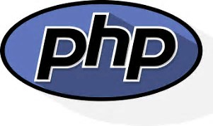
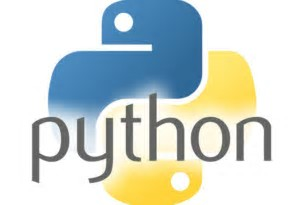

Java and C#. Both languages are popular in large companies, large projects and in projects that need optimized code. Java code does not get directly converted into machine code. Instead it runs on a "virtual machine" which can run on all sorts of different hardware. This lets Java fulfill their slogan of "Write once, run anywhere". Java was once intended for widespread use on web browsers, but that is less common and a very different language is used for that (JavaScript). It is used in regular desktop applications, but its most popular consumer use is for creating Android apps. In large companies it is used both internally and to power their websites. It is also commonly taught in colleges. C# can be called "Microsoft's Java", but it also has features missing in Java. It does not yet support multiple platforms as well as Java does, but it does fit well with Microsoft's other offerings. If someone is within a Microsoft world anyways, it likely makes sense to use C# over Java. Microsoft has started to open-source C# and associated technologies, so support for other platforms will improve over time. In summary, you should learn one of these languages if you want to program for a big company,want extra rules to help prevent errors, or if you want to work with very fast software for large projects.
PHP. PHP is a language built for creating dynamic web pages, and it runs on the server-side. Let’s say you just finished building a website without programming and now you want to be able to customize things further. You want to learn how to program the brains of the website, i.e. the back-end. A large number of websites and scripts are built using PHP, and web hosts often come with a list of one-click-install scripts. If you want to create a plugin for WordPress or work with the same script that runs Wikipedia, then PHP is for you. Practically all dynamic web hosts run PHP, and its very easy to get started with it. However, PHP has some issues, such as a messy syntax and certain inconsistencies and quirks. This means you should probably learn a different language if you just want to learn programming or you want to create an entirely new web app. However, PHP has improved over time, and if it fits your purposes, go ahead and learn it.
Python. If you just want an easy and elegant language to learn programming, Python is a good choice. Unlike PHP and Javascript, which are made for the web, Python is a general-purpose language that is often used outside of websites. Python aims to be very readable, so even a beginner could figure out what some simple Python code accomplishes. Python has the unusual feature of using indentation to mark different parts of code. This makes the code look less cluttered, but can sometimes cause issues when copying code. Python is a good choice to go with if you don’t have a specific goal that fits with one of the other languages.
 Ruby is similar to Python in many ways. It is a general-purpose language which is focused more on programmer productivity than running-time on a machine. This ‘slowness’ isn’t really an issue for most things a beginner will be building. Ruby has become popular in the last few years due to the website-building framework written in it – Ruby on Rails. Rails developed certain principles (such as “convention over configuration”) that let programmers built websites quickly. If you are interested in creating websites with Rails, then it obviously makes sense to learn some Ruby. While Rails can be used without that much Ruby knowledge, I think a beginner should first learn a simple language before taking on a complex framework.
Ruby is similar to Python in many ways. It is a general-purpose language which is focused more on programmer productivity than running-time on a machine. This ‘slowness’ isn’t really an issue for most things a beginner will be building. Ruby has become popular in the last few years due to the website-building framework written in it – Ruby on Rails. Rails developed certain principles (such as “convention over configuration”) that let programmers built websites quickly. If you are interested in creating websites with Rails, then it obviously makes sense to learn some Ruby. While Rails can be used without that much Ruby knowledge, I think a beginner should first learn a simple language before taking on a complex framework.
 JavaScript is most commonly used as a client side scripting language. This means that JavaScript code is written into an HTML page. When a user requests an HTML page with JavaScript in it, the script is sent to the browser and it's up to the browser to do something with it. The fact that the script is in the HTML page means that your scripts can be seen and copied by whoever views your page. Nonetheless, to my mind this openness is a great advantage, because the flip side is that you can view, study and use any JavaScript you encounter on the WWW. JavaScript can be used in other contexts than a Web browser. Netscape created server-side JavaScript as a CGI-language that can do roughly the same as Perl or ASP. There is no reason why JavaScript couldn’t be used to write real, complex programs. However, this site exclusively deals with the use of JavaScript in web browsers. If you don’t have any programming experience at all it’s best to start with some gentle JavaScript examples that teach you the basics. It might be a good idea to buy Negrino & Smith, “JavaScript for the World Wide Web”, 4th edition, Peachpit Press, 2001. It contains some very useful examples and though it doesn’t treat advanced programming tricks, it will certainly help you get started. Of course this site also offers plenty of help. I can also recommend Jeremy Keith, DOM Scripting: Web Design with JavaScript and the Document Object Model, 1st edition, Friends of Ed, 2005. This, too, is a book that doesn't delve too deeply into technology, but gives non-programmers such as graphic designers/CSS wizards an excellent overview of the most common uses of JavaScript - as well as the most common problems.
JavaScript is most commonly used as a client side scripting language. This means that JavaScript code is written into an HTML page. When a user requests an HTML page with JavaScript in it, the script is sent to the browser and it's up to the browser to do something with it. The fact that the script is in the HTML page means that your scripts can be seen and copied by whoever views your page. Nonetheless, to my mind this openness is a great advantage, because the flip side is that you can view, study and use any JavaScript you encounter on the WWW. JavaScript can be used in other contexts than a Web browser. Netscape created server-side JavaScript as a CGI-language that can do roughly the same as Perl or ASP. There is no reason why JavaScript couldn’t be used to write real, complex programs. However, this site exclusively deals with the use of JavaScript in web browsers. If you don’t have any programming experience at all it’s best to start with some gentle JavaScript examples that teach you the basics. It might be a good idea to buy Negrino & Smith, “JavaScript for the World Wide Web”, 4th edition, Peachpit Press, 2001. It contains some very useful examples and though it doesn’t treat advanced programming tricks, it will certainly help you get started. Of course this site also offers plenty of help. I can also recommend Jeremy Keith, DOM Scripting: Web Design with JavaScript and the Document Object Model, 1st edition, Friends of Ed, 2005. This, too, is a book that doesn't delve too deeply into technology, but gives non-programmers such as graphic designers/CSS wizards an excellent overview of the most common uses of JavaScript - as well as the most common problems.
Hey,if you're still stuck, you gotta start somewhere right? Believe or not, it has been suggested that learning a coding language is very similar to learning any written or oral language, the more you know, the easier it becomes to learn another.